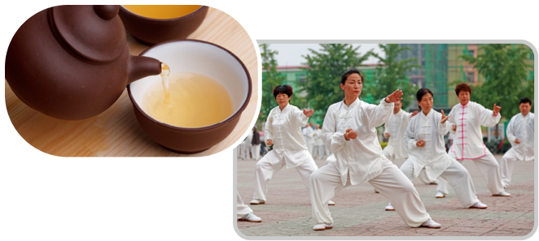

중국인의 건강 관리 비결
보충
중국인들은 건강을 위해 평소에 따뜻한 물이나 중국 전통차를 자주 마십니다.
그리고 공원 등에서 태극권이나 체조로 심신을 수련하며 건강을 유지합니다.

태극권 영상
보충
중국인의 건강 관리
太極拳
tàijíquán
태극권
공원에서 태극권을 즐긴다.
느린 동작은 관절에 무리를
주지 않고 혈액 순환을
돕는다.
药材
yàocái
약재
구기자, 황기, 오미자 등
여러 약재로 음식을 만들어
먹으며 건강을 도모한다.
茶
chá
차
차는 음료이면서 약이라고
생각한다. 기름과 산성
식품이 많은 중국 음식을
알칼리성인 차로 중화시킬
수 있다.
刮痧
guãshã
괄사(마사지)
물소 뿔이나 나무로 만든
기구로 경략과 경혈을
자극하여 몸 안의 독소를
빼 낸다고 생각한다.
닫기